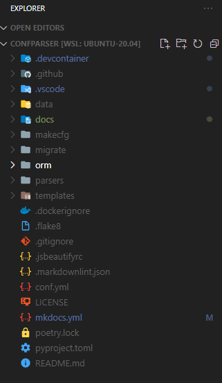
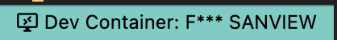
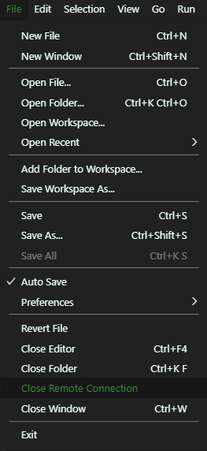
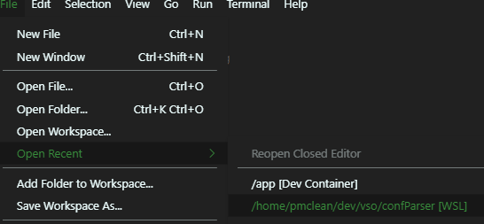

Opening the Project
In this example, we are working with the duckview example project.
Opening the project in Visual Studio Code for the first time
Open your Ubuntu™ Terminal and navigate to the project folder ~/dev/apps/duckview. Then type code . to open the project.
me@my-pc ~$ cd ~/dev/apps/duckview
me@my-pc ~/dev/apps/duckview$ code .
me@my-pc ~/dev/apps/duckview$
The project will load in VSC.

Starting the Development Container
Once loaded, click on the small green Icon on the bottom left hand corner of the Visual Studio Code. 
This will make the remote select dropdown appear.

Chose Remote-Containers: Reopen in Container.
The project will now open in the development docker container. The green icon will switch from  to saying Opening Remote....
to saying Opening Remote....

The first time opening this container on your machine will take a while, as the required development images need to be downloaded from Docker Hub, to build the container. I suggest a coffee, or maybe a 15 nap.
The container will be fully loaded and ready to use when the icon in the bottom left switches from Opening Remote to Dev Container: Config Parser as shown.

We can now test that the container is up and running by opening a terminal within VSC. To open a new terminal in VSCode on Windows, press Ctrl+Shift+' or Ctrl+'
The command prompt of the new terminal will read:
vscode@duckview:/app$
Closing the project
In the menu-bar, click File -> Close Remote Connection, this stops the development container.

You can now close Visual Studio Code.
Re-opening the project
After you have opened the project for the first time, subsequent opening is simply done by clicking File -> Open Recent then clicking on /home/<your name>/dev/apps/duckview [WSL]

Ensure that [WSL] at the end of the folder name.
Then restart the development container, as normal.